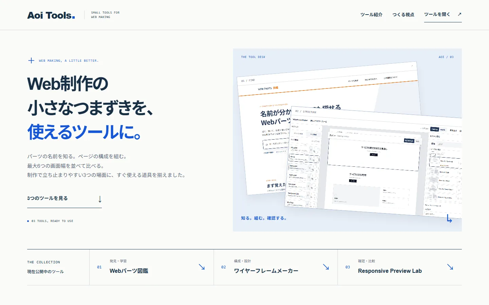
FEATURED
Webツール / UI設計 / AI活用
Aoi Tools
パーツの名前が分からない、PCとスマホの表示を何度も切り替える。制作中の小さな困りごとから、検索・構成作成・表示比較の3つのツールを作りました。
- 企画・設計
- 実装・公開
- UI改善
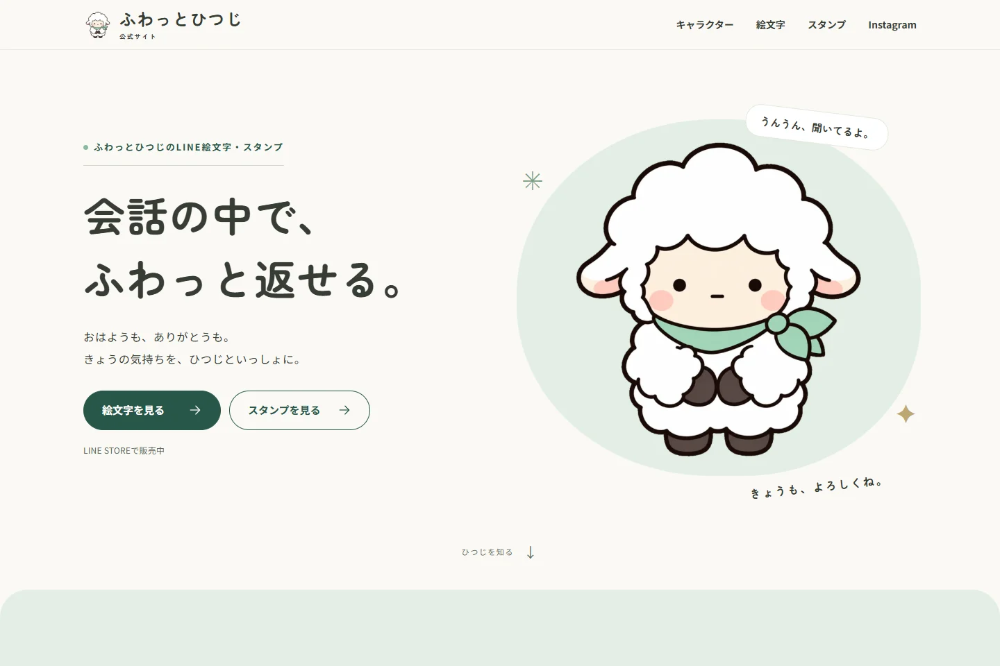
Webサイト
自身が制作・展開するオリジナルキャラクター「ふわっとひつじ」の公式サイトを制作。世界観を伝えながら、LINEスタンプ・絵文字やInstagramへ迷わず移動できる導線を設計しました。要件定義からデザイン、実装、公開まで一貫して担当しています。
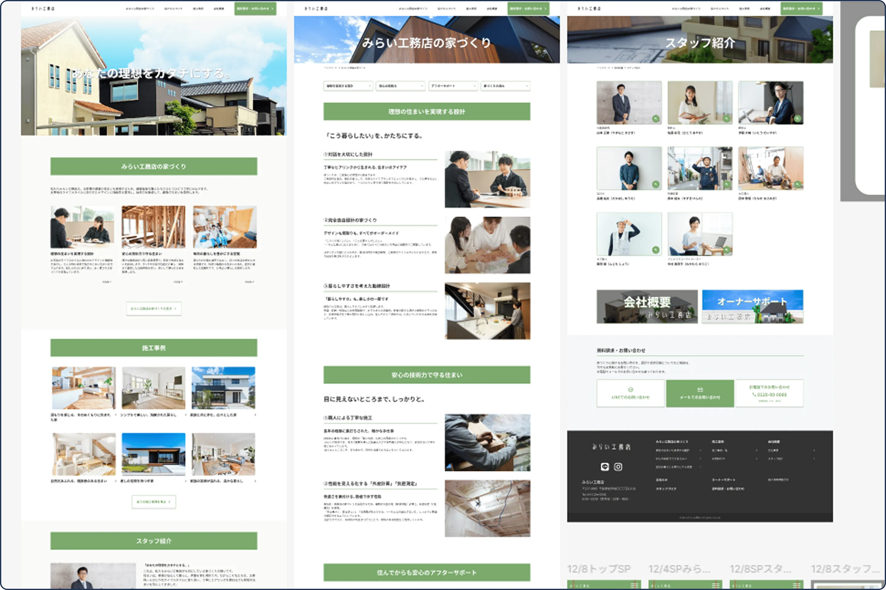
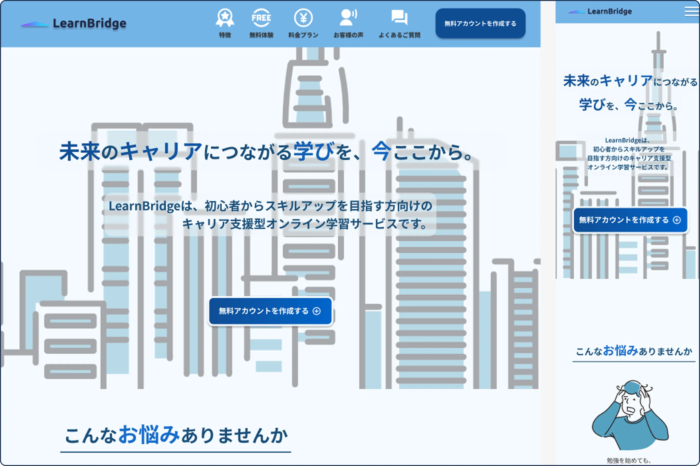
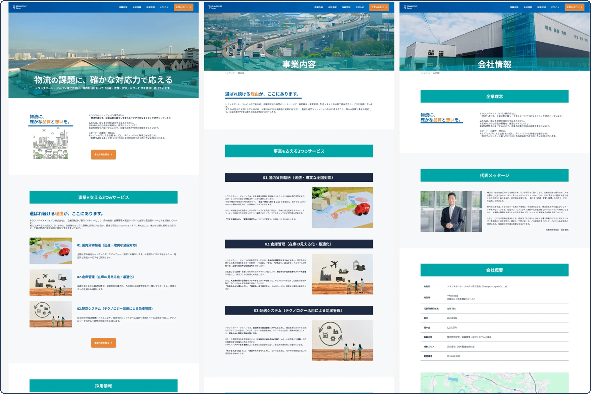
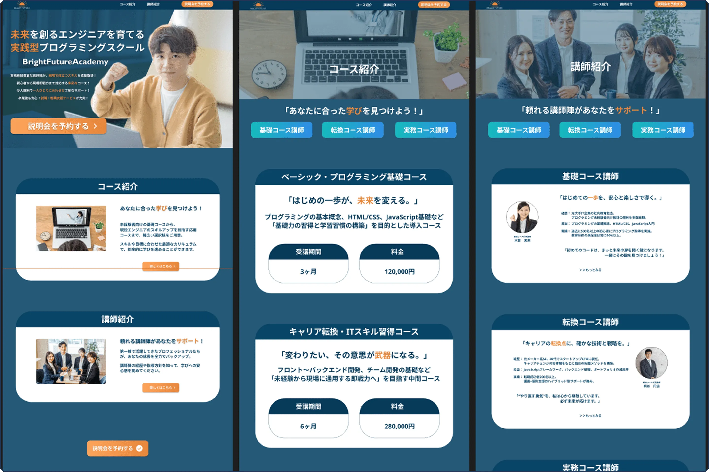
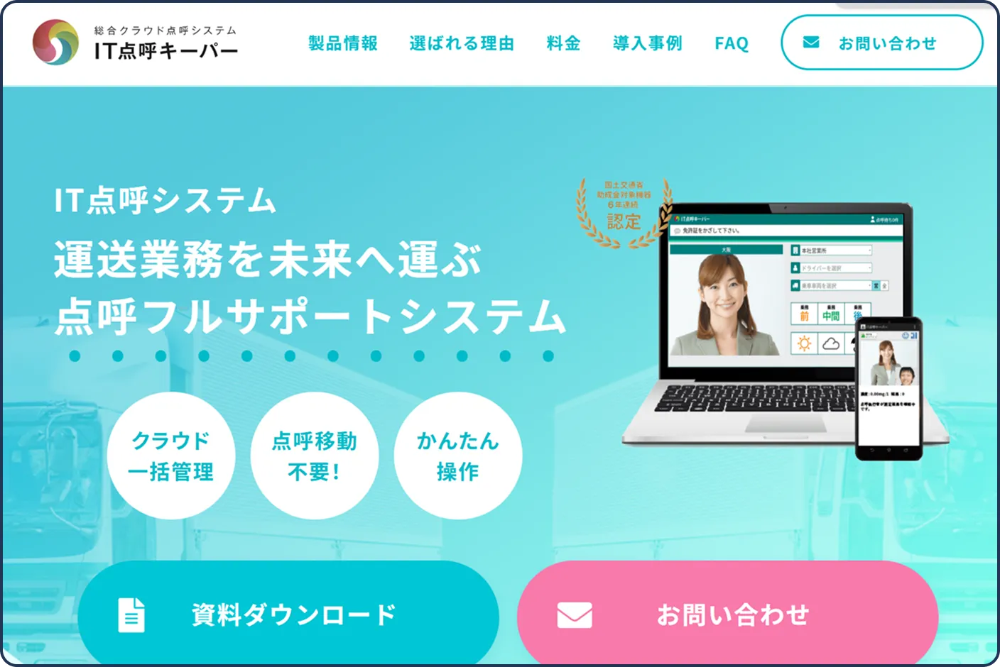
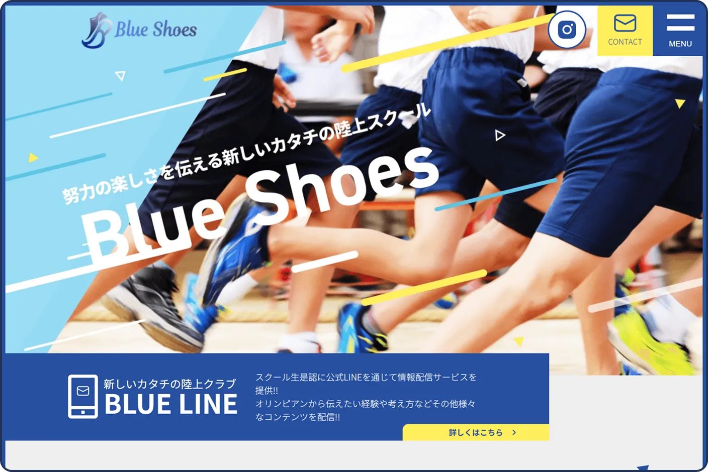
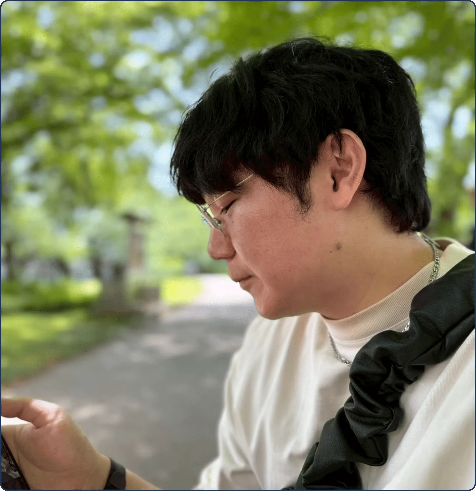
WEB DESIGNER
A.Y.
Webサイトのデザイン改修、名刺、フットサルの告知物などを制作しています。例えばサイト改修では、既存ページの色や余白のルールを確認し、追加した情報だけが浮かないことを意識しました。
Figmaでの画面設計を軸に、写真加工にはPhotoshop、既存ページの調整にはHTML / CSSを使います。AIは調査や実装支援に利用しますが、何を載せるか、どう見せるかは制作物を見ながら決めています。
サイトなら、必要な情報に迷わず辿り着けるか。告知POPなら、対戦相手・日時・会場がひと目で分かるか。媒体に合わせて、最初に読んでほしい情報を変えています。
Webデザインを軸に、デザイン・実装・公開・業務支援まで、目的に応じてツールを使い分けています。
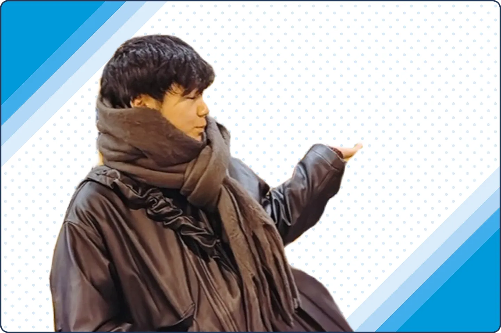
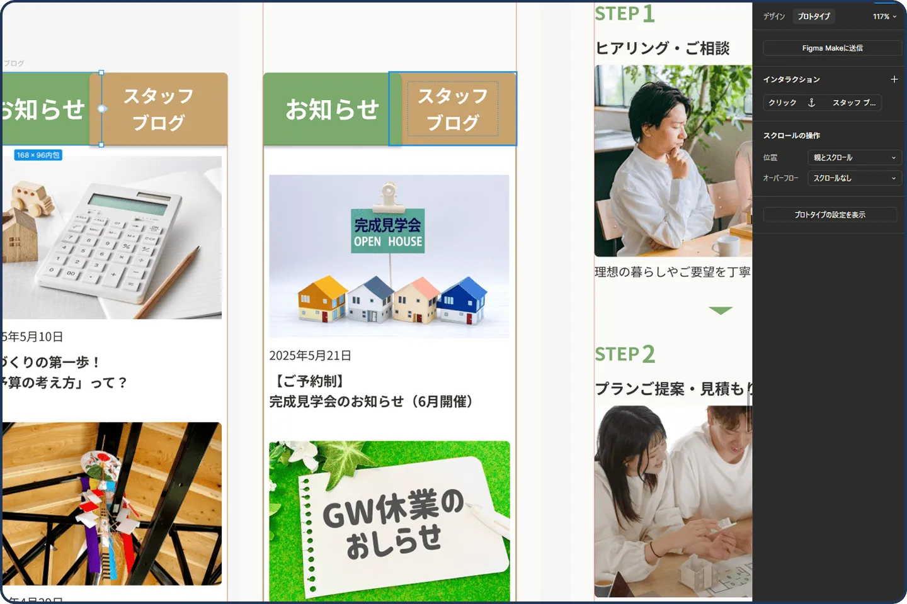
WebサイトやLP、バナーなどのデザイン制作に使用しています。ワイヤーフレームからUIデザイン、プロトタイプまで作成し、実装時の再現性も意識して設計しています。
パーツやコンポーネントを整理しながら全体の統一感を保ち、ボタン配置、余白、文字サイズなど、視認性や操作性を考えたUIデザインを行っています。
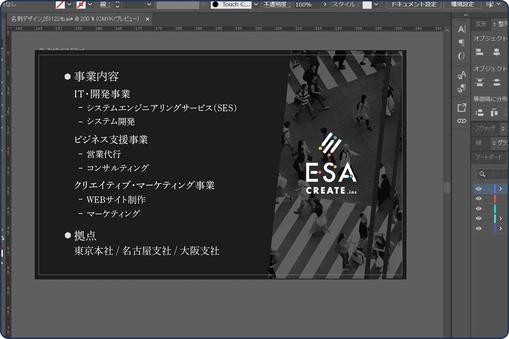
Photoshopでは、写真の切り抜きや色味・明るさの調整など、Webサイトやグラフィック制作に必要な画像加工を行っています。
Illustratorでは図形や文字組みに加え、名刺などの印刷用データ作成にも使用しています。用途やターゲットに合わせて、配色・文字サイズ・余白を調整しながら制作しています。
要件整理・調査・実装支援・業務効率化など、目的に応じて使い分けています。
要件整理、文章構成、アイデア出し、情報調査に使用。考えを言語化し、制作方針を固める補助として活用しています。
仕様やデザイン方針をもとに、Web実装・修正・テストを進める際に使用しています。実装後の表示や動作は自分で確認し、必要に応じて修正しています。
情報収集や比較調査、文章構成の確認に使用。ChatGPTとは用途を分け、複数の視点から情報を確認したい場面で活用しています。
業務ではExcel Copilotを使用し、集計表の作成や定型作業の効率化に活用しています。プロンプトで処理内容を整理し、出力結果は元データと照らし合わせながら確認しています。
HTML / CSSを中心に、既存サイトの更新やレスポンシブ対応、デザインカンプをもとにしたWeb実装に使用しています。JavaScriptは既存コードの読解やナビゲーションなどの軽微な修正を中心に使用しています。
個人制作のバージョン管理と公開に使用しています。GitHubで変更内容を管理し、Cloudflare WorkersなどでWebサイトやWebツールを公開しています。
既存Webサイトの更新・運用や、HTML / CSSを使った軽微な修正を経験しています。
業務でのデータ整理、集計表・管理表や資料の作成に使用しています。
DESIGN × AI
デザインの方向性や情報設計、配色・レイアウトの判断は自分で行っています。
AIは要件整理・調査・実装支援・業務効率化のための補助ツールとして使い、出力を確認しながら制作に取り入れています。
Webデザイン / UI・情報設計 / グラフィック
方向性と最終判断は自分で行う
ChatGPT / Codex / Gemini / Copilot
実装支援 / 調査 / 検証 / 業務効率化に活用